Umbrhalia / Cazando Eclipses
Un proyecto transmedia itinerante e independiente sobre las trayectorias de futuros eclipses solares totales alrededor del mundo.
Umbrhalia no es un personaje — es la ventana de contacto misma: el periodo de umbra/totalidad de un eclipse solar total, el instante en que la conexión con la humanidad se vuelve posible.

Ohr
Ohr es una entidad sin género ni forma fija, con una voz poética profunda, que representa la posibilidad, la entropía y la coincidencia cósmica.
Ohr narra la historia ilustrada del proyecto: una serie de pequeños cuentos, uno por cada etapa de la formación del universo — desde el Big Bang hasta el origen de la Luna — donde Ohr se adapta a cada escala cósmica sin tener nunca una silueta humana fija.
El proyecto
Una misma idea central —el eclipse como ventana de contacto cósmico— se traduce a múltiples lenguajes artísticos y sensoriales, sin que ninguno dependa exclusivamente del otro.
- Historia ilustrada + podcast autónomo — narrada por Ohr, en formato impreso y como pieza sonora completamente independiente.
- Sitio web — este mismo hub: presentación, mapa interactivo de trayectorias, y archivo participativo.
- Documental — entrevistas a testigos reales de eclipses.
- Instalación inmersiva multisensorial — no solo VR; pensada también para personas ciegas o con baja visión.
- Talleres itinerantes — con observación telescópica.
- Archivo participativo — testimonios reales de quienes han vivido un eclipse; la verdadera culminación del recorrido.
Mapa de trayectorias
135 eclipses solares totales entre 1900 y 2100. Cada franja roja es la ruta de la totalidad — toca o pasa el cursor sobre una para ver la fecha, duración y ancho de la franja.
Datos de trayectorias: Michael Zeiler, a partir del trabajo de Xavier Jubier (servicio público ArcGIS). Contorno continental: world.geo.json.
Participar
¿Viviste un eclipse solar total? Este será el espacio para compartir tu experiencia y sumarla al archivo participativo del proyecto.
Formulario próximamente.